绘画功能
圆形
void circle(Mat &img, Point center, int radius, const Scalar &color,] int thickness=1,] int lineType=8,] int shift=0)
枚举类
lineType
8(默认) ———— 8连接线。
4 ———— 4连接线。
CV_AA ———— 抗锯齿线。
例子
circle(img, Point(100,100), 50, Scalar(100,0,100), 2);
中心(100,100)，半径50，线条颜色bgr(100,0,100)，线条厚度为2.
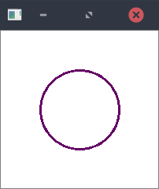
circle(img, Point(100,100), 50, Scalar(100,0,100), -1);
中心(100,100)，半径50，实心，颜色bgr(100,0,100).
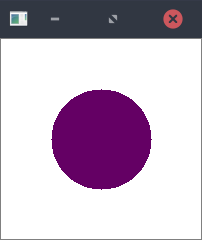
椭圆
void ellipse(Mat& img, Point center, Size axes, double angle, double startAngle, double endAngle, const Scalar& color,] int thickness=1,] int lineType=8,] int shift=0)
void ellipse(Mat& img, const RotatedRect& box, const Scalar& color, ] int thickness=1, int lineType=8)
参数
img – 图片。 center – 椭圆的中心。 axes – 椭圆主轴尺寸的一半。(见下axes.width和axes.height) angle – 椭圆旋转角度，以度为单位。(见下angle) startAngle – 椭圆弧的起始角度，以度为单位。(见下startAngle) endAngle – 椭圆弧的终止角度，以度为单位。(见下endAngle) box – 通过RotatedRect或CvBox2D的替代椭圆表示。这意味着该函数绘制一个刻在旋转矩形中的椭圆。 color – 颜色。 thickness – 椭圆弧轮廓的厚度（如果为正）。 否则，这表明将绘制一个填充的椭圆扇形。 lineType – 椭圆边界的类型。 shift – 中心坐标和轴值中的小数位数。
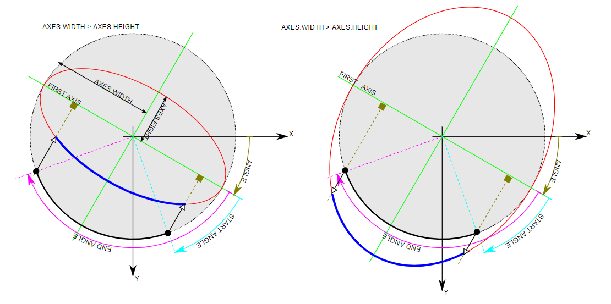
例子
ellipse(img, Point(100,100), Size(100,50), 30, 0, 270, Scalar(0, 103, 255), -1)
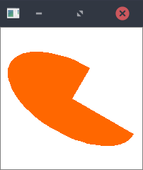
长方形
void rectangle(Mat &img, Point pt1, Point pt2, const Scalar &color, ] int thickness=1, int lineType=8, int shift=0)
void rectangle(Mat &img, Rect rec, const Scalar &color, ] int thickness=1, int lineType=8, int shift=0)
例子
rectangle(img, Point(50,50), Point(150,150), Scalar(103, 255, 0), -1)
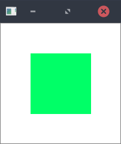
rectangle(img, Point(50,50), Point(150,150), Scalar(103, 255, 0), 5)
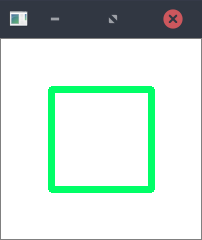
直线
void line(Mat &img, Point pt1, Point pt2, const Scalar &color, ] int thickness=1, int lineType=8, int shift=0)
例子
line(img, Point(50,50), Point(150,150), Scalar(103, 0, 255), 5)
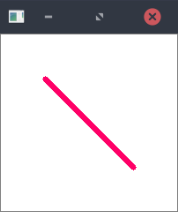
箭头
void arrowedLine(Mat& img, Point pt1, Point pt2, const Scalar& color, ] int thickness=1, int line_type=8, int shift=0, double tipLength=0.1)
参数
tipLength – 箭头笔尖相对于箭头长度的长度
例子
arrowedLine(img, Point(50,50), Point(150,150), Scalar(103, 0, 255), 5)
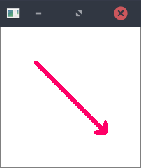
文字
void putText(Mat &img, const string &text, Point org, int fontFace, double fontScale, Scalar color, int thickness=1, int lineType=8, bool bottomLeftOrigin=false )
参数
text – 要写入的文字。
org – 左下角的坐标。
fontFace – 字体。为：FONT_HERSHEY_SIMPLEX, FONT_HERSHEY_PLAIN, FONT_HERSHEY_DUPLEX,
FONT_HERSHEY_COMPLEX, FONT_HERSHEY_TRIPLEX, FONT_HERSHEY_COMPLEX_SMALL,
FONT_HERSHEY_SCRIPT_SIMPLEX, or FONT_HERSHEY_SCRIPT_COMPLEX。
字体ID可以+FONT_ITALIC 来得到倾斜的字体。
fontScale – 字体比例大小。
bottomLeftOrigin – 为true时，图像数据源位于左下角。 否则，它位于左上角（如果true，字体将上下倒反）。
例子
putText(img, "Hello", Point(50,100), FONT_HERSHEY_SIMPLEX, 1, Scalar(255,103,0), 2)
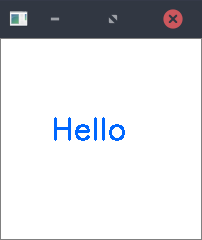
PutText仅支持英语字母，任何UTF是不支持的（包括汉字）
例子
例子(一)
draw_example_1.cpp
#include <opencv2/opencv.hpp>
using namespace cv;
int main()
{
Mat img(300,300,CV_8UC3,Scalar(0));
//中心点
Point center = Point(img.cols/2,img.rows/2);
//实心圆
circle(img,center, 7, Scalar(0,0,255),-1);
//椭圆
Size axes = Size(img.rows/5,img.cols*2/5);
for(int angle = 0;angle<=135;angle+=45)
ellipse(img,center,axes,angle,0,360,Scalar(200,200,20));
imshow("img",img);
waitKey(0);
destroyAllWindows();
return 0;
}
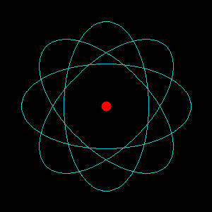
例子(二)
draw_example_2.cpp
#include <opencv2/opencv.hpp>
#include <vector>
using namespace cv;
using namespace std;
void drawResult(Mat &img, vector<Point> rois, vector<String> result) {
for (int i=0; i<result.size(); ++i) {
if (result[i] == "") { continue; }
rectangle(img, rois[i*2], rois[i*2+1], Scalar(255,75,75), 2);
rectangle(img, Point(rois[i*2].x, rois[i*2].y), Point(rois[i*2].x+100, rois[i*2].y+20), Scalar(255,75,75), -1);
putText(img, result[i], Point(rois[i*2].x,rois[i*2].y+15), FONT_HERSHEY_SIMPLEX, 0.6, Scalar(255,255,255), 1);
}
imshow("result", img);
waitKey(0);
destroyAllWindows();
}
int main() {
Mat img = imread("Strawberry.jpg");
vector<Point> rois = {Point(350, 200), Point(580, 420), Point(185, 270), Point(345, 365), Point(295, 405), Point(490, 615)};
vector<String> labels = {"Strawberry", "Strawberry", "Strawberry"};
drawResult(img, rois, labels);
return 0;
}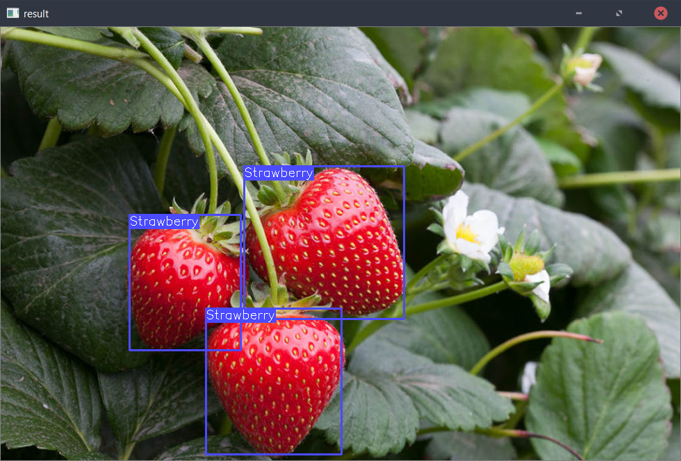
例子(三)
draw_example_3.cpp
//绘制直线
#include<opencv2/opencv.hpp>
#define w 300
using namespace cv;
void DrawLine1(Mat img,Point start,Point end);
void DrawLine2(Mat img,Point start,Point end);
void DrawLine3(Mat img,Point start,Point end);
void FilledCircle( Mat img, Point center );
void Ellipse( Mat img, double angle );
int main()
{
namedWindow("1",WINDOW_NORMAL);
Mat image1=Mat::zeros(w,2*w,CV_8UC3);
//北
DrawLine2(image1,Point(33,100),Point(33,200));
DrawLine2(image1,Point(10,133),Point(33,133));
DrawLine2(image1,Point(10,166),Point(33,166));
DrawLine2(image1,Point(66,100),Point(66,200));
DrawLine2(image1,Point(90,120),Point(66,150));
DrawLine2(image1,Point(66,200),Point(90,200));
//京
DrawLine2(image1,Point(150,100),Point(150,108));
DrawLine2(image1,Point(110,115),Point(190,115));
DrawLine2(image1,Point(133,130),Point(166,130));
DrawLine2(image1,Point(133,130),Point(133,150));
DrawLine2(image1,Point(166,130),Point(166,150));
DrawLine2(image1,Point(133,150),Point(166,150));
DrawLine2(image1,Point(150,150),Point(150,200));
DrawLine2(image1,Point(150,200),Point(145,195));
DrawLine2(image1,Point(130,190),Point(110,200));
DrawLine2(image1,Point(170,190),Point(190,200));
//理
DrawLine1(image1,Point(210,110),Point(238,110));
DrawLine1(image1,Point(210,150),Point(238,150));
DrawLine1(image1,Point(210,200),Point(238,200));
DrawLine1(image1,Point(224,110),Point(224,200));
DrawLine1(image1,Point(250,100),Point(290,100));
DrawLine1(image1,Point(250,100),Point(250,150));
DrawLine1(image1,Point(290,100),Point(290,150));
DrawLine1(image1,Point(250,150),Point(290,150));
DrawLine1(image1,Point(270,100),Point(270,200));
DrawLine1(image1,Point(250,125),Point(290,125));
DrawLine1(image1,Point(255,175),Point(285,175));
DrawLine1(image1,Point(245,200),Point(295,200));
//工
DrawLine1(image1,Point(310,105),Point(390,105));
DrawLine1(image1,Point(310,200),Point(390,200));
DrawLine1(image1,Point(350,105),Point(350,200));
//大
DrawLine3(image1,Point(460,100),Point(410,200));
DrawLine3(image1,Point(410,133),Point(490,133));
DrawLine3(image1,Point(438,133),Point(490,200));
//学
DrawLine3(image1,Point(550,95),Point(550,107));
DrawLine3(image1,Point(525,100),Point(530,107));
DrawLine3(image1,Point(575,100),Point(570,107));
DrawLine3(image1,Point(510,112),Point(590,112));
DrawLine3(image1,Point(510,112),Point(510,122));
DrawLine3(image1,Point(590,112),Point(590,122));
DrawLine3(image1,Point(535,120),Point(565,120));
DrawLine3(image1,Point(565,120),Point(550,150));
DrawLine3(image1,Point(550,150),Point(550,200));
DrawLine3(image1,Point(550,200),Point(540,190));
DrawLine3(image1,Point(510,150),Point(590,150));
//实心圆
FilledCircle(image1,Point(50,50));
//椭圆
Ellipse(image1,0);
Ellipse(image1,90);
Ellipse(image1,45);
Ellipse(image1,135);
imshow("1",image1);
waitKey(0);
destroyAllWindows();
return 0;
}
void DrawLine1(Mat img,Point start,Point end)
{
int thickness = 3;
int lineType = 8;
line(img,
start,
end,
Scalar(30,150,30),
thickness,
lineType);
}
void DrawLine2(Mat img,Point start,Point end)
{
int thickness = 3;
int lineType = 8;
line(img,
start,
end,
Scalar(100,200,255),
thickness,
lineType);
}
void DrawLine3(Mat img,Point start,Point end)
{
int thickness = 3;
int lineType = 8;
line(img, start, end, Scalar(50,25,255), thickness, lineType);
}
void FilledCircle( Mat img, Point center )
{
int thickness = -1;
int lineType = 8;
circle(img, center, w/40.0, Scalar(0,0,255), thickness, lineType);
}
void Ellipse( Mat img, double angle )
{
int thickness = 1.5;
int lineType = 8;
ellipse(img, Point(50,50), Size(20,40), angle, 0, 360,
Scalar(200, 200, 20), thickness, lineType);
}
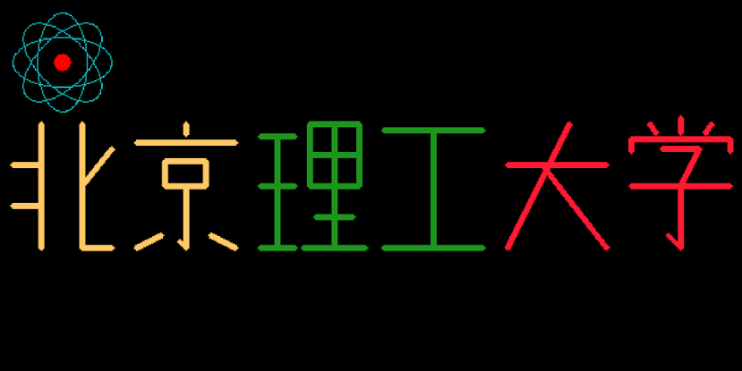